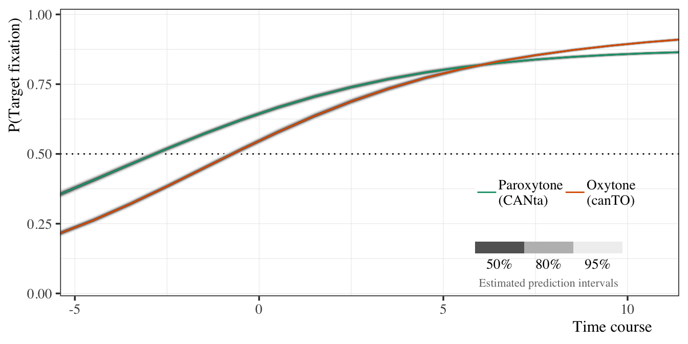
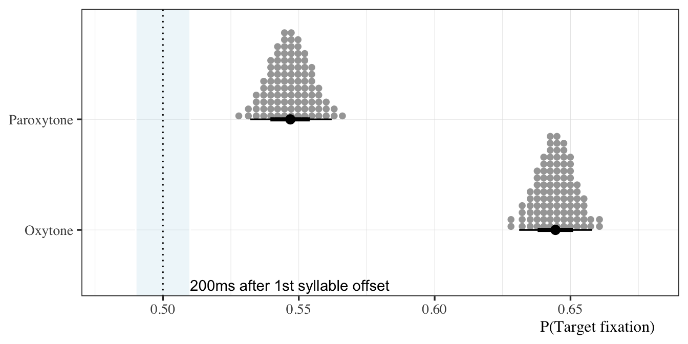
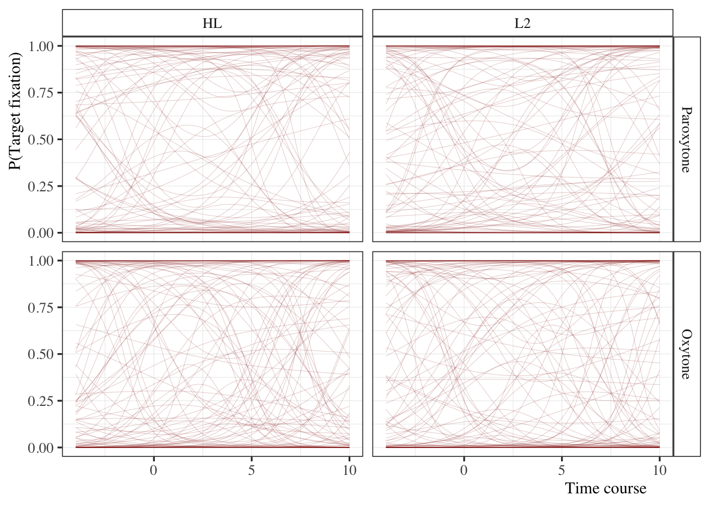
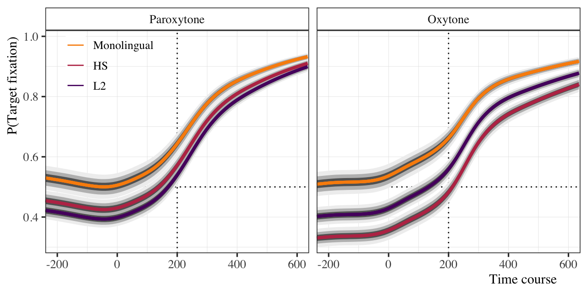
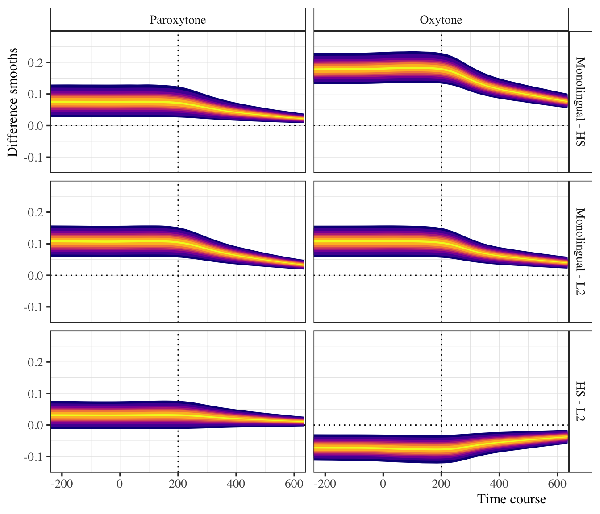
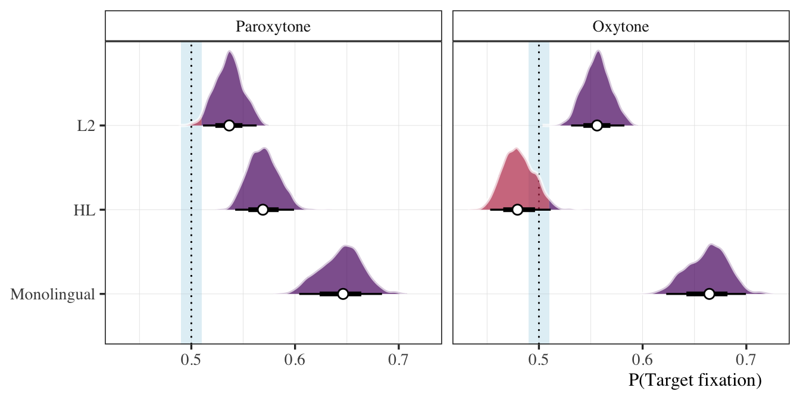
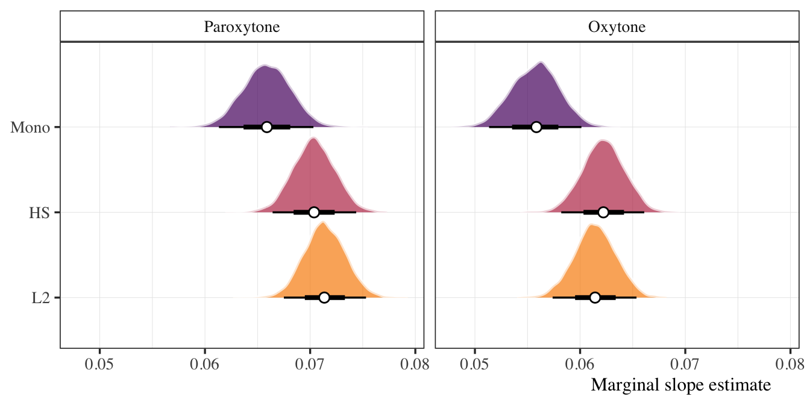
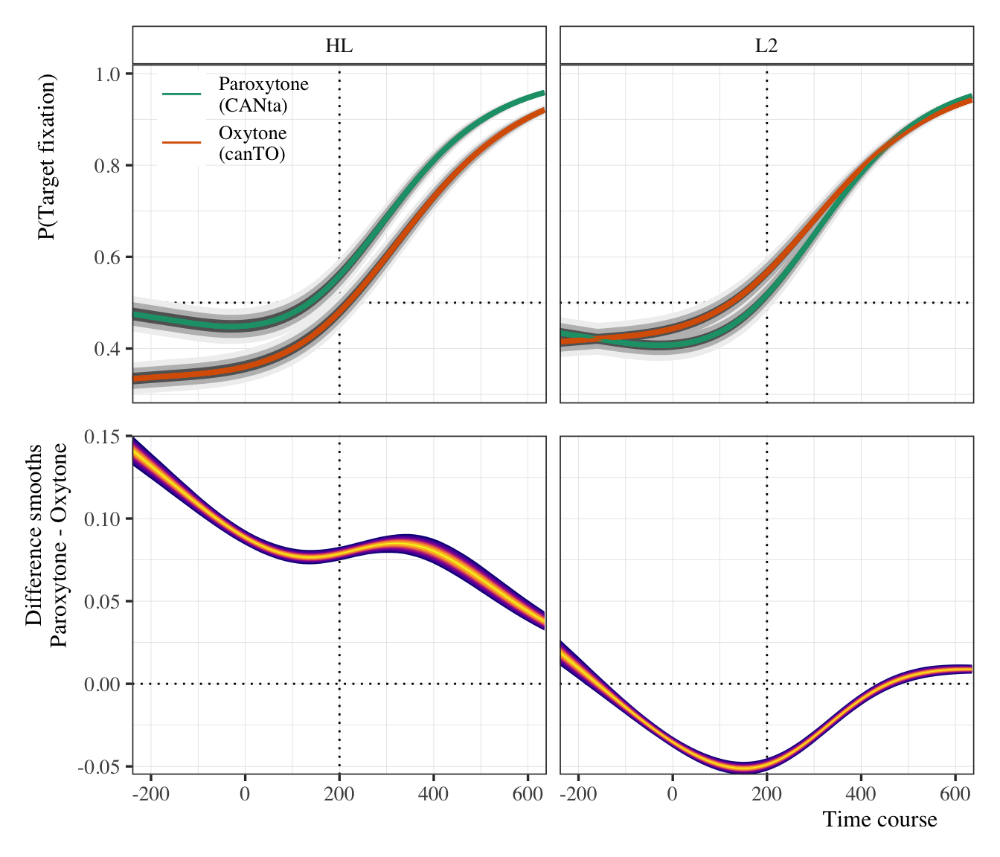

Code
# Load libraries and helpers
source(here::here("scripts", "00_libraries.R"))
source(here::here("scripts", "01_helpers.R"))
source(here::here("scripts", "04_load_data.R"))GAMMs
Load everything we need for the analyses.
# Load libraries and helpers
source(here::here("scripts", "00_libraries.R"))
source(here::here("scripts", "01_helpers.R"))
source(here::here("scripts", "04_load_data.R"))First, we’ll fit a model to the data of one participant to check and make sure everything is working ok.
# Take subset of 1 participant
mon01 <- stress_50 %>%
filter(id == "mon01",
time_zero > -10, time_zero < 20)
# Set model formula
formula <- bf(
target_count | trials(50) ~ 1 + stress +
s(time_zero, bs = "cr", k = 3) +
s(time_zero, by = stress, bs = "cr", k = 3)
)
# Get priors
get_prior(
formula = formula,
family = binomial(link = "logit"),
data = mon01
) %>%
as_tibble() %>%
select(prior, class, coef) %>%
knitr::kable(format = "pandoc")| prior | class | coef |
|---|---|---|
| b | ||
| b | stime_zero_1 | |
| b | stime_zero:stressOxytone_1 | |
| b | stime_zero:stressParoxytone_1 | |
| b | stressParoxytone | |
| student_t(3, 0, 2.5) | Intercept | |
| student_t(3, 0, 2.5) | sds | |
| sds | s(time_zero, bs = “cr”, k = 3) | |
| sds | s(time_zero, by = stress, bs = “cr”, k = 3) |
# Set priors
log_spline_priors <- c(
prior(normal(0, 3), class = Intercept),
prior(normal(0, 10), class = b),
prior(student_t(3, 0, 1), class = sds)
)
# Fit test mod
test_mod <- brm(
formula = formula,
family = binomial(link = "logit"),
prior = log_spline_priors,
iter = 2000, warmup = 1000, cores = 4,
backend = "cmdstanr",
control = list(adapt_delta = 0.99, max_treedepth = 15),
data = mon01,
file = here("models", "gamms", "test_mod")
)We can use the posterior to take a look at the model fit.
# Plot time course
test_mod %>%
emmeans(spec = ~ 1 + time_zero + stress,
at = list(time_zero = seq(-5.5, 11.5, 1)),
epred = T) %>%
gather_emmeans_draws() %>%
ggplot(., aes(x = time_zero, y = .value / 50, color = stress)) +
geom_hline(yintercept = 0.5, lty = 3) +
stat_lineribbon(size = 0.5) +
scale_color_brewer(name = NULL, palette = "Dark2",
labels = c("Paroxytone\n(CANta)", "Oxytone\n(canTO)")) +
scale_fill_brewer(name = NULL, palette = "Greys",
labels = c("95%", "80%", "50%")) +
labs(y = "P(Target fixation)", x = "Time course") +
coord_cartesian(xlim = c(-5.4, 11.4), ylim = c(-0.01, 1.02),
expand = F) +
clean_guide(position = c(0.8, 0.22),
title = "Estimated prediction intervals")
# Test at time 0
test_mod %>%
emmeans(
spec = ~ 1 + time_zero + stress,
at = list(time_zero = 0),
epred = TRUE
) %>%
gather_emmeans_draws() %>%
mutate(prop = .value / 50) %>%
ggplot(., aes(x = prop, y = stress)) +
geom_rect(data = tibble(xmin = 0.49, xmax = 0.51),
inherit.aes = F, fill = "lightblue", color = "white", alpha = 0.2,
aes(xmin = xmin, xmax = xmax, ymin = -Inf, ymax = Inf)) +
geom_vline(xintercept = 0.5, lty = 3, size = 0.5) +
stat_dotsinterval(quantiles = 100) +
geom_text(aes(label = label), hjust = 0,
data = tibble(stress = 0.5, prop = 0.51,
label = "200ms after 1st syllable offset")) +
labs(y = NULL, x = "P(Target fixation)") +
coord_cartesian(xlim = c(0.48, 0.68))
Now we set up the data set for the main model. Main concerns are (1) getting the factors ready for smoothing terms and (2) subsetting the time course to reduce computational load.
# Set model formula
formula_log_gamm_stress <- bf(
target_count | trials(50) ~ 1 + group * stress +
s(time_zero, bs = "cr") +
s(time_zero, by = stress, bs = "cr") +
#s(time_zero, id, bs = "fs", m = 1, k = 3) +
#s(time_zero, target, bs = "fs", m = 1, k = 3)
(1 | id)
)
# Take a look at the default priors
get_prior(
formula = formula_log_gamm_stress,
family = binomial(link = "logit"),
data = stress_50_gamm
) %>%
as_tibble() %>%
select(prior, class, coef) %>%
knitr::kable(format = "pandoc")| prior | class | coef |
|---|---|---|
| b | ||
| b | groupHL | |
| b | groupHL:stressOxytone | |
| b | groupL2 | |
| b | groupL2:stressOxytone | |
| b | stime_zero_1 | |
| b | stime_zero:stressOxytone_1 | |
| b | stressOxytone | |
| student_t(3, 0, 2.5) | Intercept | |
| student_t(3, 0, 2.5) | sd | |
| sd | ||
| sd | Intercept | |
| student_t(3, 0, 2.5) | sds | |
| sds | s(time_zero, bs = “cr”) | |
| sds | s(time_zero, by = stress, bs = “cr”) |
# Set priors
stress_log_gamm_priors <- c(
prior(normal(0, 3), class = Intercept),
prior(normal(0, 3), class = b),
prior(student_t(3, 0, 5.9), class = sds),
prior(cauchy(0, 2), class = sd)
)
# Fit model
gamm_log_group_stress <- brm(
formula = formula_log_gamm_stress,
family = binomial(link = "logit"),
prior = stress_log_gamm_priors,
iter = 2000, warmup = 1000, cores = 4, threads = threading(2),
backend = "cmdstanr",
control = list(adapt_delta = 0.9999, max_treedepth = 15),
data = stress_50_gamm,
file = here("models", "gamms", "gamm_log_group_stress")
)Now we will fit a separate model to the bilingual groups’ data. This model includes standardized proficiency and use scores.
# Set up data frame
bi_50_gamm <- stress_50 %>%
filter(group != "Monolingual",
time_zero > -4, time_zero < 10) %>%
mutate(id = as.factor(id),
target = as.factor(target),
stress = as.ordered(stress),
stress = fct_relevel(stress, "Paroxytone"),
group = fct_relevel(group, "HL"))
# Set contrasts for stress
contrasts(bi_50_gamm$stress) <- "contr.treatment"
# Set model formula
formula_gamm_bi <- bf(
target_count | trials(50) ~ 1 + group * stress +
prof_z + use_z +
s(time_zero, bs = "cr", k = 3) +
s(time_zero, by = stress, bs = "cr", k = 3) +
#s(time_zero, id, bs = "fs", m = 1, k = 3) +
#s(time_zero, target, bs = "fs", m = 1, k = 3)
(1 | id),
family = binomial(link = "logit")
)
# Get model default priors
get_prior(
formula = formula_gamm_bi,
data = bi_50_gamm
) %>%
as_tibble() %>%
select(prior, class, coef) %>%
knitr::kable(format = "pandoc")| prior | class | coef |
|---|---|---|
| b | ||
| b | groupL2 | |
| b | groupL2:stressOxytone | |
| b | prof_z | |
| b | stime_zero_1 | |
| b | stime_zero:stressOxytone_1 | |
| b | stressOxytone | |
| b | use_z | |
| student_t(3, 0, 2.5) | Intercept | |
| student_t(3, 0, 2.5) | sd | |
| sd | ||
| sd | Intercept | |
| student_t(3, 0, 2.5) | sds | |
| sds | s(time_zero, bs = “cr”, k = 3) | |
| sds | s(time_zero, by = stress, bs = “cr”, k = 3) |
Prior predictive checks for bilingual model.
# Set priors
bi_gamm_priors <- c(
prior(normal(0, 1.5), class = Intercept),
prior(normal(0, 3), class = b),
prior(normal(0, 2), class = sds),
prior(cauchy(0, 2), class = sd)
)
# Fit model to test priors
gamm_log_bi_stress_prior_fit <- brm(
formula = formula_gamm_bi,
family = binomial(link = "logit"),
prior = bi_gamm_priors,
iter = 2000, warmup = 1000, cores = 4,
sample_prior = "only",
backend = "cmdstanr",
control = list(adapt_delta = 0.9999, max_treedepth = 15),
data = bi_50_gamm,
file = here("models", "gamms", "gamm_log_bi_stress_prior_fit")
)
# Prior predictive checks
bi_50_gamm %>%
expand(time_zero = seq(-4, 10, length.out = 50), group, stress,
id = "ahs01", prof_z = 0, use_z = 0) %>%
add_epred_draws(gamm_log_bi_stress_prior_fit, ndraws = 100) %>%
ggplot() +
aes(x = time_zero, y = .epred/50) +
facet_grid(stress ~ group) +
geom_line(aes(group = .draw), alpha = 0.2, size = 0.2, color = "darkred") +
labs(y = "P(Target fixation)", x = "Time course")
# Fit actual model
gamm_log_bi_stress <- brm(
formula = formula_gamm_bi,
family = binomial(link = "logit"),
prior = bi_gamm_priors,
iter = 2000, warmup = 1000, cores = 4,
backend = "cmdstanr",
control = list(adapt_delta = 0.9999, max_treedepth = 15),
data = bi_50_gamm,
file = here("models", "gamms", "gamm_log_bi_stress")
)# Full model
gamm_log_group_stress_draws <- gamm_log_group_stress %>%
emmeans(spec = ~ time_zero + stress + group, epred = T,
at = list(time_zero = seq(-4.8, 12.8, 0.25)),
ra_formula = NULL) %>%
gather_emmeans_draws()
gamm_log_group_stress_draws %>%
ggplot() +
aes(x = time_zero, y = .value / 50, color = group) +
facet_grid(. ~ stress) +
geom_hline(yintercept = 0.5, lty = 3, size = 0.5) +
geom_vline(xintercept = 0 + 4, lty = 3, size = 0.5) +
stat_lineribbon(show.legend = F) +
stat_summary(fun = median, geom = "line") +
scale_fill_brewer(palette = "Greys") +
scale_color_manual(name = NULL, values = my_colors) +
coord_cartesian(xlim = c(-4.8, 12.8), ylim = c(0.28, 1.02),
expand = F) +
scale_x_continuous(breaks = seq(-4, 12, 4), labels = seq(-200, 600, 200)) +
labs(y = "P(Target fixation)", x = "Time course") +
theme(legend.position = c(0.12, 0.86),
legend.text = element_text(size = 10))
# Calculate difference smooths
gamm_log_group_stress_draws_diffs <- gamm_log_group_stress_draws %>%
pivot_wider(names_from = group, values_from = .value) %>%
mutate(`Monolingual - HL` = Monolingual - HL,
`Monolingual - L2` = Monolingual - L2,
`HL - L2` = HL - L2) %>%
pivot_longer(cols = `Monolingual - HL`:`HL - L2`, names_to = "comp",
values_to = "val")
# Plot smooths
gamm_log_group_stress_draws_diffs %>%
mutate(comp = fct_relevel(comp, "Monolingual - HL", "Monolingual - L2")) %>%
ggplot() +
facet_grid(comp ~ stress) +
aes(x = time_zero, y = val / 50) +
geom_hline(yintercept = 0, lty = 3, size = 0.5) +
geom_vline(xintercept = 0 + 4, lty = 3, size = 0.5) +
stat_lineribbon(color = "#11111100", show.legend = F,
.width = c(0.1, 0.35, 0.5, 0.6, 0.7, 0.8, 0.9, 0.95)) +
scale_color_viridis_d(aesthetics = "fill", option = "C") +
coord_cartesian(xlim = c(-4.8, 12.8), ylim = c(-0.15, 0.3),
expand = F) +
scale_x_continuous(breaks = seq(-4, 12, 4), labels = seq(-200, 600, 200)) +
labs(y = "Difference smooths", x = "Time course")
gamm_log_group_stress %>%
emmeans(spec = ~ time_zero + stress + group,
at = list(time_zero = 4),
ra_formula = NULL) %>%
gather_emmeans_draws() %>%
mutate(prop = plogis(.value)) %>%
ggplot() +
aes(x = prop, y = group, fill = stat(x > 0.51)) +
facet_grid(. ~ stress) +
geom_rect(data = tibble(x = c(0.49, 0.51), y = NULL),
aes(xmin = min(x), xmax = max(x), ymin = -Inf, ymax = Inf),
fill = "lightblue", alpha = 0.2, inherit.aes = FALSE) +
geom_vline(xintercept = 0.5, lty = 3, size = 0.5) +
stat_slab(alpha = 0.7, color = "white", show.legend = F) +
stat_pointinterval(pch = 21, point_fill = "white", show.legend = F) +
scale_fill_manual(name = NULL, values = my_colors[2:3], labels = NULL) +
scale_color_manual(name = NULL, values = my_colors[2:3], labels = NULL) +
coord_cartesian(xlim = c(NA, NA)) +
labs(y = NULL, x = "P(Target fixation)")
# Get marginal slope when time_zero = 4 as an estimate of rate of
# fixation on targets
# This can be used in a plot (if necessary) by estimating the y value
# at the desired x (time_zero == 4, for example) and then calculating
# the intercept using `find_intercept` (see example below)
if(F) {
lines <- bind_rows(
gamm_log_group_stress %>%
emmeans(specs = ~ time_zero + stress + group,
at = list(time_zero = 4),
epred = T) %>%
gather_emmeans_draws() %>%
mutate(.value = .value / 50) %>%
median_hdi() %>%
transmute(stress, group, .value, term = "y"),
gamm_log_group_stress %>%
emtrends(spec = ~ time_zero + stress + group,
var = "time_zero",
at = list(time_zero = 4),
delta.var = 0.001,
epred = T) %>%
gather_emmeans_draws() %>%
mutate(.value = .value / 50) %>%
median_hdi() %>%
transmute(stress, group, .value, term = "slope")) %>%
pivot_wider(names_from = term, values_from = .value) %>%
mutate(intercept = find_intercept(x1 = 4, y1 = y, slope = slope))
}
# Get posterior estimates of marginal slopes
gamm_log_group_stress %>%
emtrends(
spec = ~ time_zero + stress + group,
var = "time_zero",
at = list(time_zero = 4),
delta.var = 0.001,
epred = T) %>%
gather_emmeans_draws() %>%
ggplot() +
aes(x = .value / 50, y = group, fill = group) +
facet_grid(stress ~ .) +
stat_slab(alpha = 0.7, color = "white", show.legend = F) +
stat_pointinterval(pch = 21, point_fill = "white", show.legend = F) +
scale_fill_manual(name = NULL, values = my_colors, labels = NULL) +
coord_cartesian(xlim = c(NA, NA)) +
labs(y = NULL, x = "Marginal slope estimate")
gamm_log_bi_stress_draws <- gamm_log_bi_stress %>%
emmeans(
spec = ~ time_zero + stress + group + use_z + prof_z,
epred = T,
at = list(
time_zero = seq(-4.8, 12.8, 0.25),
prof_z = 0, use_z = 0
),
ra_formula = NULL) %>%
gather_emmeans_draws()
gamm_bi_p1 <- gamm_log_bi_stress_draws %>%
ggplot() +
aes(x = time_zero, y = .value / 50, color = stress) +
facet_grid(. ~ group) +
geom_hline(yintercept = 0.5, lty = 3, size = 0.5) +
geom_vline(xintercept = 0 + 4, lty = 3, size = 0.5) +
stat_lineribbon(show.legend = F) +
stat_summary(fun = mean, geom = "line") +
scale_fill_brewer(palette = "Greys") +
scale_color_brewer(name = NULL, palette = "Dark2",
labels = c("Paroxytone\n(CANta)", "Oxytone\n(canTO)")) +
coord_cartesian(xlim = c(-4.8, 12.8), ylim = c(0.28, 1.02),
expand = F) +
scale_x_continuous(breaks = seq(-4, 12, 4)) +
labs(y = "P(Target fixation)", x = NULL) +
theme(legend.position = c(0.12, 0.86),
legend.key.size = unit(1.7, 'lines'),
legend.text = element_text(size = 10),
axis.text.x = element_blank(), axis.ticks.x = element_blank())
# Calculate difference smooths
gamm_log_bi_stress_draws_diffs <- gamm_log_bi_stress_draws %>%
pivot_wider(names_from = stress, values_from = .value) %>%
mutate(diff = Paroxytone - Oxytone)
# Plot smooths
gamm_bi_p2 <- gamm_log_bi_stress_draws_diffs %>%
ggplot() +
aes(x = time_zero, y = diff / 50) +
facet_grid(. ~ group) +
geom_hline(yintercept = 0, lty = 3, size = 0.5) +
geom_vline(xintercept = 0 + 4, lty = 3, size = 0.5) +
stat_lineribbon(color = "#11111100", show.legend = F,
.width = c(0.1, 0.35, 0.5, 0.6, 0.7, 0.8, 0.9, 0.95)) +
scale_color_viridis_d(aesthetics = "fill", option = "C") +
coord_cartesian(xlim = c(-4.8, 12.8), expand = F) +
scale_x_continuous(breaks = seq(-4, 12, 4), labels = seq(-200, 600, 200)) +
labs(y = "Difference smooths\nParoxytone - Oxytone", x = "Time course") +
theme(strip.background = element_blank(), strip.text = element_blank())
gamm_bi_p1 / gamm_bi_p2